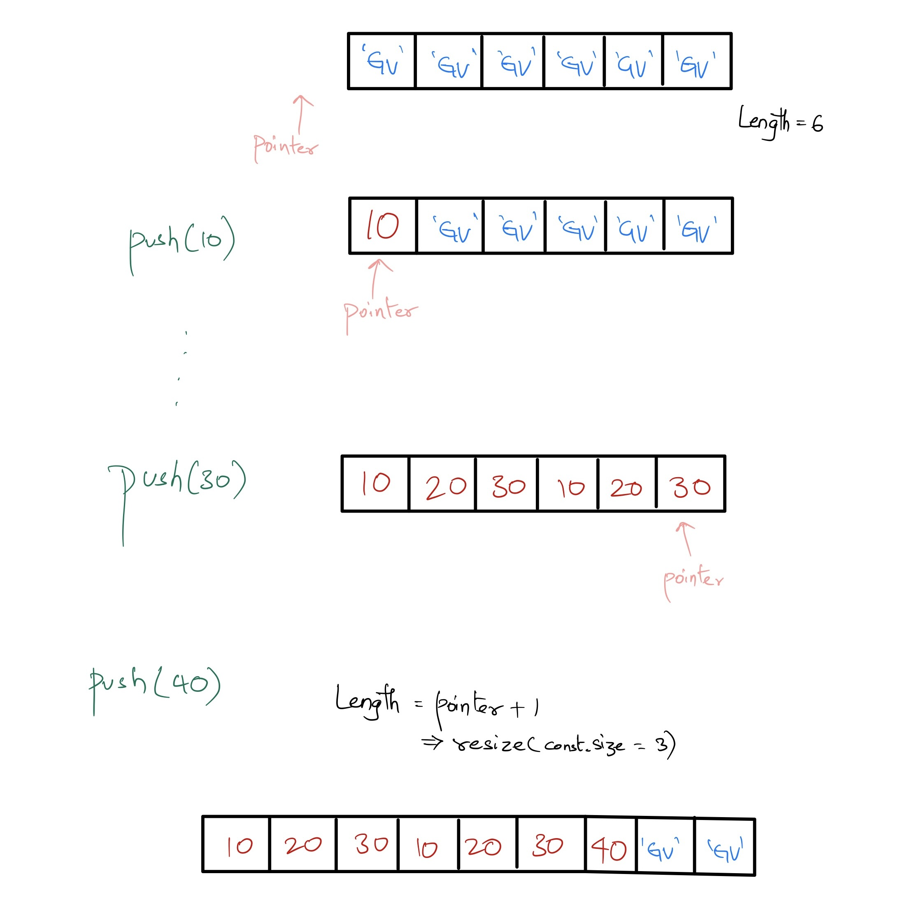
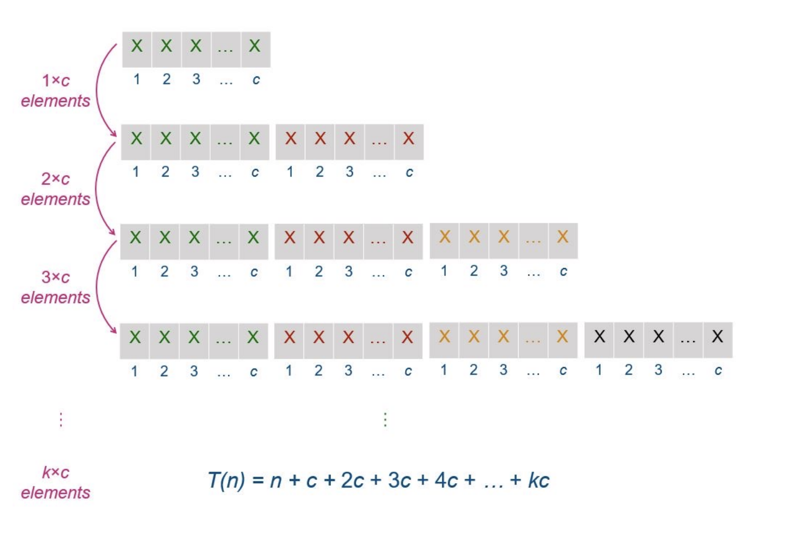
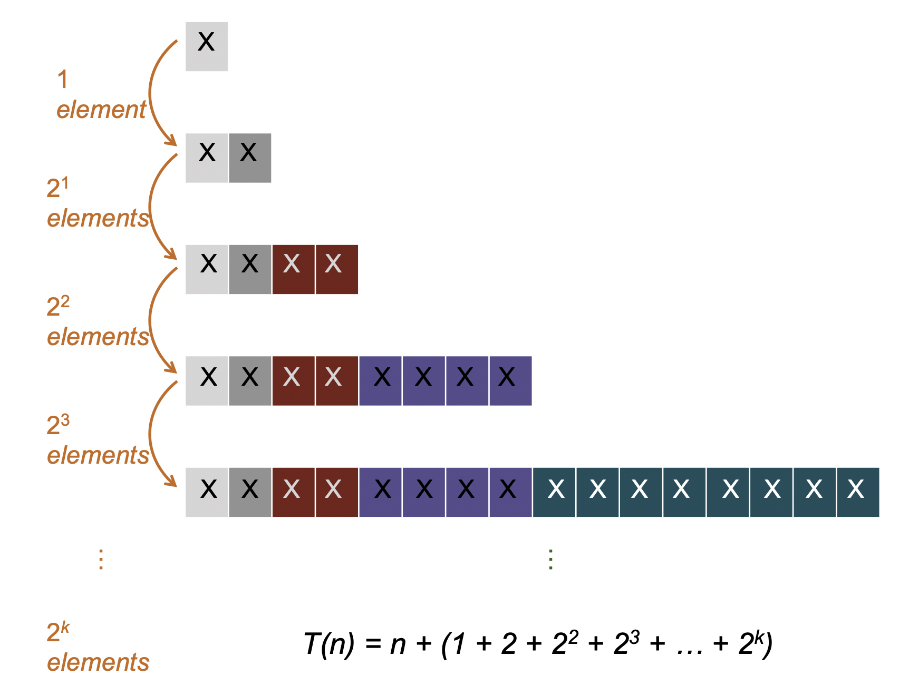
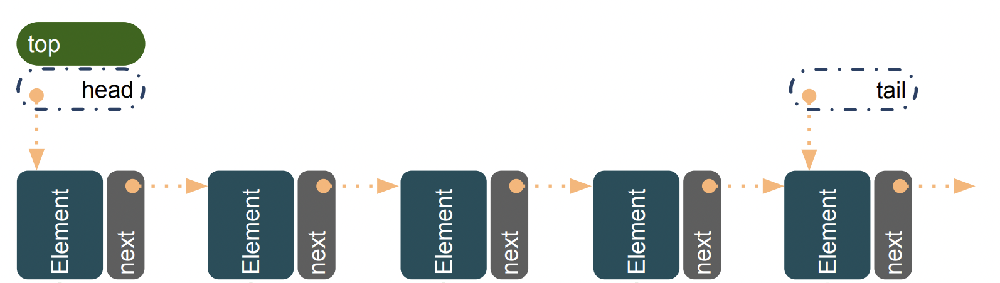
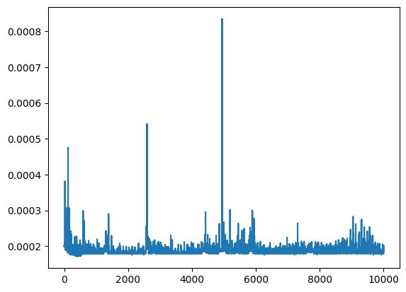
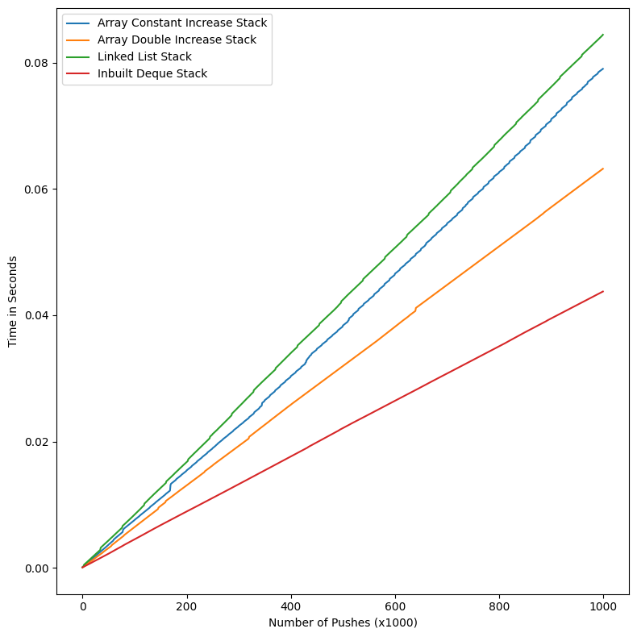
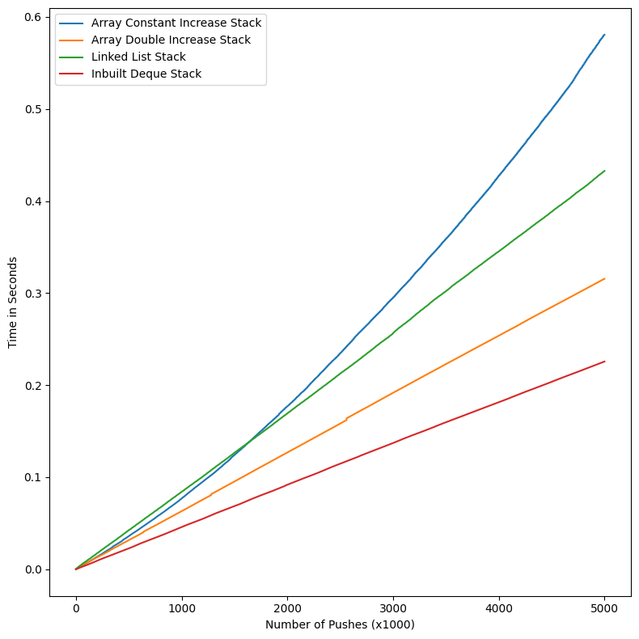
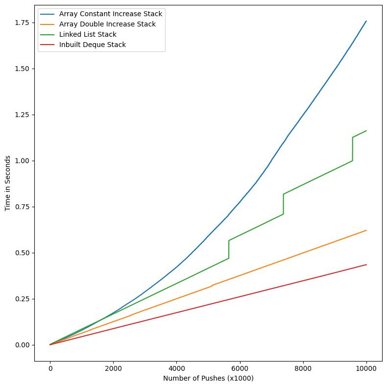
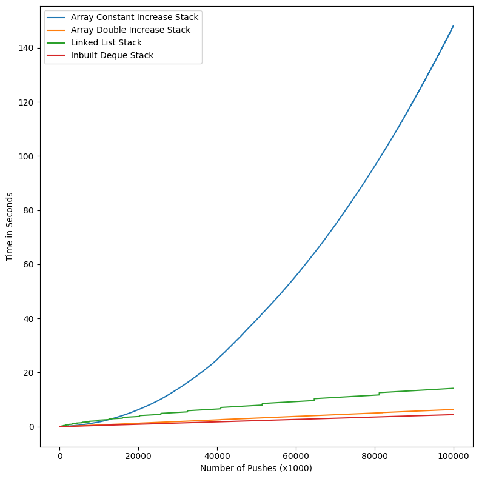

Programming Assignment 1 - Playing with Stack
Introduction
The experiment’s objective is to build the Stack ADT on top of Array and Linked List.
The Array implementation was performed using two different methods:
- increasing the array size with a
constant sizewhenever the stack is filled and - expanding the array size by
doublingit
The Linked List implementation was performed with the help of a Node class, which gives a node object for every element added to the stack and linked with other nodes via a pointer next
After implementing these Data Structures, we experiment to measure the time taken to push upto 10 Million elements in each implementation and compare them with each other and with the built-in Stack in the collections library named deque
Theoretical Analysis
Array Based
We will be implementing array-based Stack, and the Array is considered dynamic here and can be increased in size in two ways.
Constant Increase
The Array-based implementation, which involves increasing the size of the array by the same constant size when the stack is full, is executed by copying the entire array to a new array of the size old_array + constant_factor

Time Complexity for Push Operation
For n elements to be pushed in the stack, let us assume we have an initial array of constant size of c, and whenever the stack is filled, we increase the array by the same size c
\(T(n) = n + c + 2c + 3c + ... + kc\)
Here n is the number of elements being pushed, so for each element accessing and placing the element in the array takes \(O(1)\) time. Hence for n elements. it is \(O(n)\) time.
After every c element is filled, a new array is created of old_size + c, and all the elements from the old array are copied to this new array, so for every new c addition, we have to copy c, 2c, 3c and so on elements until the final c set elements where we copy kc elements.

n pushes in Constant Increase Array\(T(n) = n + c + 2c + 3c + ... + kc\)
\(T(n) = n + c(1+2+3+...+k)\)
\(T(n) = n + (c*k*(k+1))/2\)
c is constant and can be ignored
\(T(n) = n + k^2\)
\(k = n/c\)
c is constant and can be ignored
\(T(n) = n + n^2\)
\(T(n) = O(n^2)\)
The Amortized time for each push operation is \(T(n)/n = O(n^2)/n = O(n)\)
Doubling Size
We start with an array of size c(assume c=1) and push elements to the array. When the stack is filled, we create a new array of size old_size * 2. So when for \(i^{th}\) increase, the size of the array will be \(2^i\)
Time Complexity for Push Operation
Hence for n elements, \(T(n) = n + (1 + 2 + 2^2 + 2^3 + ... + 2^k)\)

Similar to previous one, the n here is adding n elements to the array, and the second term is for copying from old array to new array.
\(T(n) = n + (1 + 2 + 2^2 + 2^3 + ... + 2^k)\)
\(T(n) = n + (2^{2k+1} +1)\)
\(k=\log_2 n\)
\(T(n) = 3n - 1\)
\(T(n) = O(n)\)
The Amortized time for each push operation is \(T(n)/n = O(n)/n = O(1)\)
Linked List Based
The Linked List approach is for every push of the element, we create a node object add the element to data variable of the object and the next variable is the pointer to the next node.

Time Complexity for Push Operation
Here, for every push, we create a new node object, and the time to create an object is constant, for n elements the time taken to push these elements is creating n nodes, which takes \(O(n)\) time.
\(T(n) = n * c\)
c is constant and can be ignored
\(T(n) = O(n)\)
Time for each push is \(T(n) = O(n)/n = O(1)\)
Comparision
Incremental Array is having the least optimum time complexity of \(O(n)\) for each push, whereas the other two implementations have \(O(1)\)
In Doubling Array, the worst case time complexity to add one element, when the array size has to be increased is \(O(n)\), compared to the best/worst/average time complexity of Linked List is \(O(1)\).
Hence, Linked List would be a better Data Structure to implement the Stack ADT.
Experimental Setup
Machine Specification:
CPU: Apple M1 chip
- 8-core CPU with 4 performance cores and 4 efficiency cores.
- 5nm ARM-Based (v8.5+A) Processor
- 3.2 GHz CPU Clock Speed for Performance Cores
- 192(instruction) + 128(data) KB L1 Cache
- 12MB L2 Cache
Memory
- 16GB of LPDDR4X-4266 MHz SDRAM
Testing Different Implementations
To test both the array-based and linked list implementations, we calculate the time taken to push elements in the stack.
The setup is such that the time is calculated cumulatively for every 100 pushes for overall n iterations.
The n here is 100,000; 500,000; 1,000,000 and 10,000,000 pushes with time calculated cumulatively after every 100 pushes. For each of these experiments, it was repeated 10 times and the average time was for each 100 was calculated at the end.
Experimental Results
The Experiment followed the theoretical analysis, where asymptotically when the value of number of pushes goes higher and higher, the Array with constant increase behave quadratic \(O(n^2)\), whereas all the other three, i.e, Array with doubling the size, Linked List and In-built Deque have linear complexity \(O(n)\).
In the beginning, with small number of pushes like 100,000 the above mentioned behaviour is not evident, but as we keep on increasing the number of pushes, all the four implementations start following the pattern.
There is one discrepancy, that the Linked List Stack is taking more time than any Array Doubling Stack, whereas for Linked List, the best/worst/average case for each push is \(O(n)\) where as the worst case in Doubling Array Stack is \(O(n)\). So in theory Doubling Array should take more time.
But when performing profiling on the linked list class pushes, we see that we create a new node object on every call of the function and there is an overhead in the object creation.
This is also the reason we see sudden spikes in the green line(linked list) of later graphs. This is empirically shown in the Figure 5 where time calculation of 1000 Node creation, shows sudden spikes.

The following graphs show the time complexities of 4 implementations, in various sizes of n. It is clear as to how when n increases, the time complexity becomes clearer and clearer



